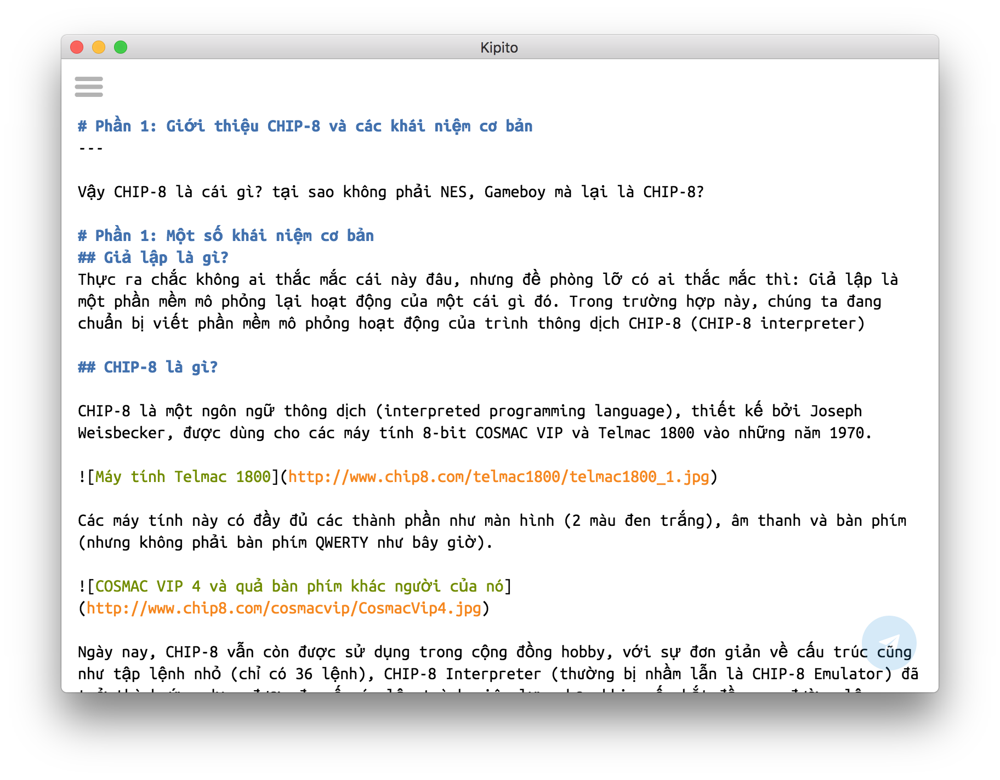

Kipito Editor
Kipito là một markdown editor mã nguồn mở được xây dựng trên nền tảng React/Redux và Electron.

Kipito còn được tích hợp khả năng hỗ trợ việc post bài lên Kipalog - Là một cộng đồng chia sẽ các bài viết về lập trình rất bổ ích. Sắp tới có thể sẽ bổ sung thêm tính năng hỗ trợ Medium và GitHub Pages
Hiện nay Kipito đang trong giai đoạn thử nghiệm nên không tránh khỏi việc xuất hiện bug, tuy tỉ lệ xảy ra bug là rất thấp =)) Rất mong nhận được sự góp ý từ các bạn để Kipito ngày một hoàn thiện hơn.
Download
Mã nguồn
Các bạn có thể tham khảo và contribute vào mã nguồn của dự án tại GitHub: